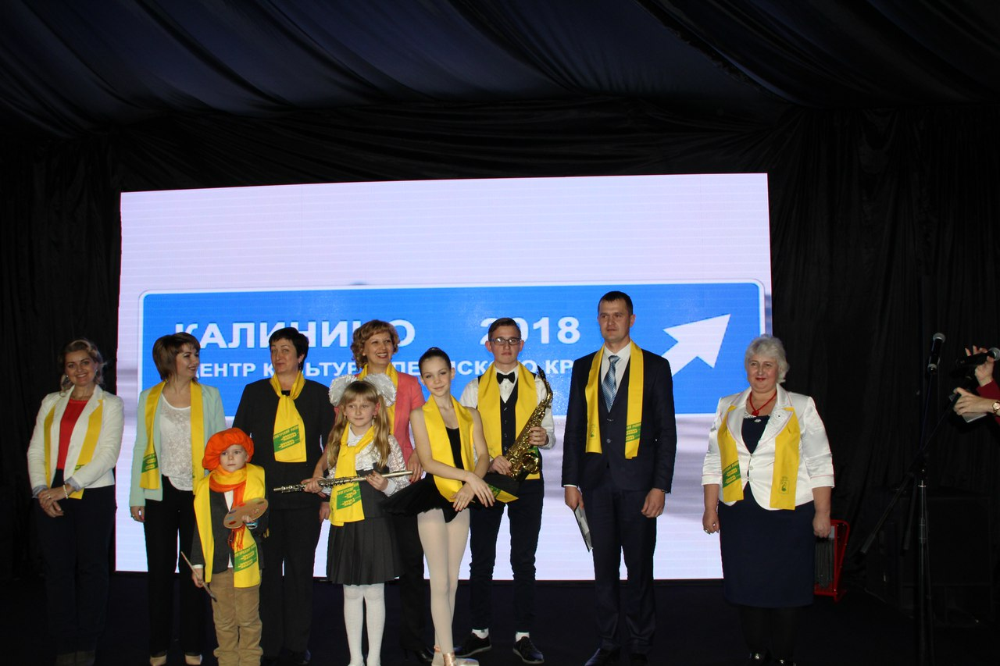
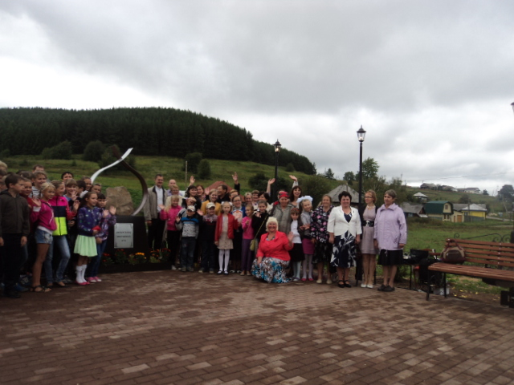
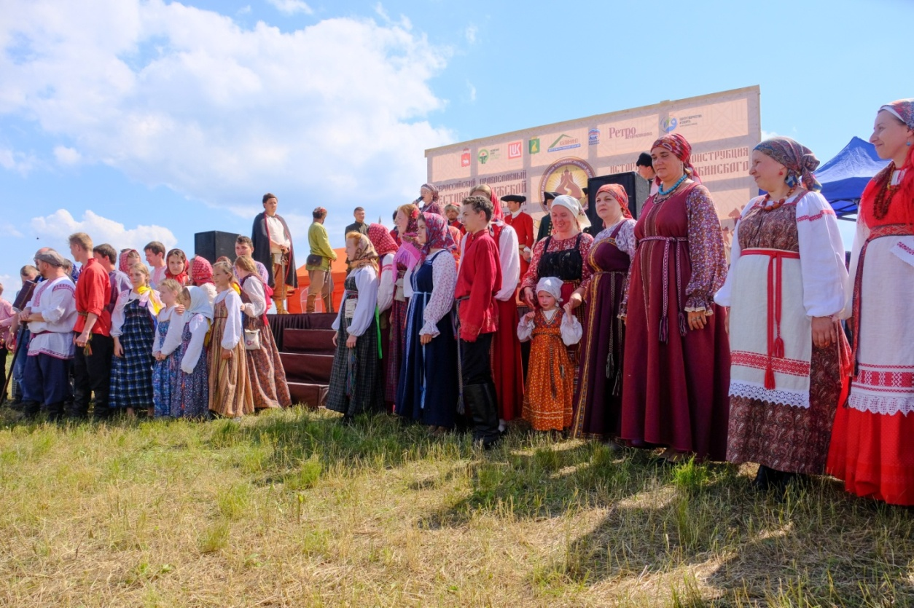

6 декабря 2018 года в рамках проекта «Пермский край-территория культуры» состоялось торжественное открытие музейно-просветительского центра, разместившийся, в здании бывшей Калининской детской школы искусств. Заведующая музеем Фофанова Татьяна Николаевна 19лет занимается музейной деятельностью. Ее стараниями в 2018 году были реализованы 4 проекта: « Калинино: гора историй», «Связь времен», «Шаг в мир истории родного края», «Калинино- гора историй» по модернизации музейного дела. В результате реализации проектов в музейно-просветительском центре появилось пять выставочных залов, 4 фондохранилища для музейных экспонатов, в музейно-просветительский центр была приобретена мебель проекционное и звуковое оборудование. В селе Калинино появился арт-объект «Гора историй», туристическая навигация с 11историческими табличками. В рамках проекта были проведены 19 мероприятий от всероссийского до местного масштаба, в них приняло участие 5389 человек.

Проектной деятельностью музей занимается с 2014 год, а когда в течение 4 лет был реализован значимый для села Калинино проект «Историческая точка отсчета» в результате появился арт-объект «Медистый песчаник» его олицетворяет порода, благодаря которой появилось наше село. Появился объект «Лестница заводской истории», благоустроенная площадка с лавочками и декоративными фонарями освещения, информационно-историческими табличками рассказывающими, об истории медеплавильного завода.

Экскурсии, проводимые в музее, вызывают большой интерес, как у местного населения, так и гостей села. Все годы Калининский музей ведет лидирующее место профессиональной деятельности. Работы воспитанников кружка бисероплетения были неоднократными дипломантами различных конкурсов выставок и фестивалей. Семь лет работы Татьяны Николаевны Фофановой и ее воспитанников являются участниками краевой выставки народных промыслов.

За свою профессиональную деятельность Фофанова Т.Н. неоднократно награждалась грамотами и благодарственными письмами Главы Кунгурского муниципального района. В 2018 году награждена Грамотой и благодарственным письмом Министра культуры Пермского края.